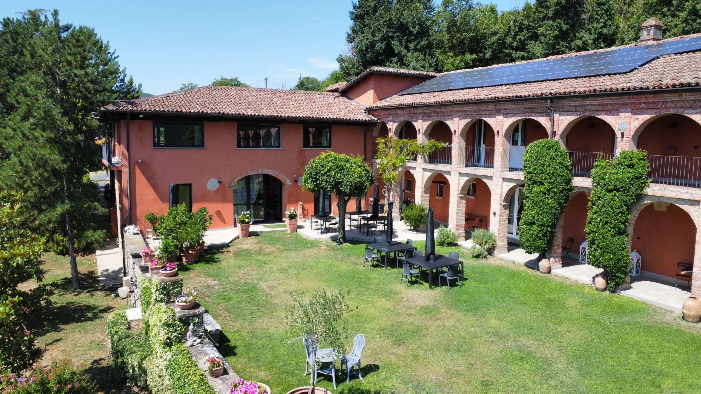

€1.200.000
Monastero Bormida · Piedmont · Italy
Hilltop Monastero Bormida stone-and-brick cascina with brick-arched portico, vaulted tavernetta, stone cellar and a private pool with pool house — generous agriturismo-scale character under the €1.2M cap.
Opened 15 Sep 2026 on Selected Homes Piemonte; asking €1.200.000; 760 m² / 12 bed / 10 bath / land 14,955 m²; includes dépendance; habitable now.
Open the listing